26 - Casi Studio Avanzati
Questa pagina presenta tre esempi complessi tratti da casi reali che dimostrano le piene capacità di beamfeapy: un edificio multipiano, un grigliato di travi 3D e un grattacielo con benchmark prestazionale.
Esempio 26 — Palazzina residenziale di 9 piani (2×3 campate)
Un edificio in cemento armato di 9 piani con: - 2 campate in X (6 m ciascuna) × 3 campate in Y (5 m ciascuna) - 12 pilastri per piano (griglia 3×4), altezza di interpiano 3,0 m - Travi in entrambe le direzioni X e Y a ogni piano - 120 nodi, 261 elementi
Carichi
| Caso | Tipo | Descrizione |
|---|---|---|
| G | Distribuito | 25 kN/m su tutte le travi (permanente) |
| Q | Distribuito | 8 kN/m su tutte le travi (carico variabile) |
| W | Nodale | 15 kN orizzontale a ogni piano (vento, direzione X) |
Analisi
- Statica SLU: combinazione
{G: 1.35, Q: 1.5} - Modale: masse da
{G: 1.0, Q: 0.3}
Risultati
Static analysis (ULS: 1.35G + 1.5Q): 0.221 s
Max horizontal displacement at top floor: 9.20e-05 m (0.09 mm)
Modal analysis: 0.284 s
Mode f [Hz] T [s] mpX mpY
1 0.537 1.863 0.813 0.000
2 0.587 1.704 0.000 0.817
3 0.622 1.609 0.000 0.000
4 1.605 0.623 0.000 0.000
5 1.638 0.610 0.099 0.000
6 1.777 0.563 0.000 0.099
Script
Mostra lo script completo
"""Example 26 - 9-storey residential building (2x3 bays)."""
import _common # noqa: F401
import time
from beamfeapy import Material, Model, Section
from beamfeapy.plotting import (
plot_deformed, plot_diagram, plot_loads, plot_model, plot_mode, plot_reactions,
)
def main():
n_storeys = 9
bays_x, bays_y = 2, 3
Lx, Ly = 6.0, 5.0
H = 3.0
mat = Material(E=30e9, nu=0.2, alpha=1.0e-5)
col_sec = Section(A=0.16, Iy=2.13e-3, Iz=2.13e-3, J=3.6e-3)
bm_x_sec = Section(A=0.15, Iy=1.125e-3, Iz=2.8125e-3, J=1.5e-3)
bm_y_sec = Section(A=0.15, Iy=1.125e-3, Iz=2.8125e-3, J=1.5e-3)
m = Model()
node_id = 1
node_grid = {}
for iz in range(n_storeys + 1):
for iy in range(bays_y + 1):
for ix in range(bays_x + 1):
x, y, z = ix * Lx, iy * Ly, iz * H
m.add_node(node_id, x, y, z)
node_grid[(ix, iy, iz)] = node_id
node_id += 1
elem_id = 1
for iz in range(n_storeys):
for iy in range(bays_y + 1):
for ix in range(bays_x + 1):
ni = node_grid[(ix, iy, iz)]
nj = node_grid[(ix, iy, iz + 1)]
m.add_beam(elem_id, ni, nj, mat, col_sec)
elem_id += 1
for iz in range(1, n_storeys + 1):
for iy in range(bays_y + 1):
for ix in range(bays_x):
ni = node_grid[(ix, iy, iz)]
nj = node_grid[(ix + 1, iy, iz)]
m.add_beam(elem_id, ni, nj, mat, bm_x_sec, ref_vector=(0, 0, 1))
elem_id += 1
for iz in range(1, n_storeys + 1):
for iy in range(bays_y):
for ix in range(bays_x + 1):
ni = node_grid[(ix, iy, iz)]
nj = node_grid[(ix, iy + 1, iz)]
m.add_beam(elem_id, ni, nj, mat, bm_y_sec, ref_vector=(0, 0, 1))
elem_id += 1
for iy in range(bays_y + 1):
for ix in range(bays_x + 1):
m.fix(node_grid[(ix, iy, 0)])
beam_elem_ids = []
for e in m.elements.values():
ni, nj = e.node_i.id, e.node_j.id
zi = m.nodes[ni].z
zj = m.nodes[nj].z
if abs(zi - zj) < 0.01:
beam_elem_ids.append(e.id)
for e_id in beam_elem_ids:
m.add_distributed_load(e_id, "fy", -25e3, case="G")
m.add_distributed_load(e_id, "fy", -8e3, case="Q")
for iz in range(1, n_storeys + 1):
for iy in range(bays_y + 1):
for ix in range(bays_x + 1):
m.add_nodal_load(node_grid[(ix, iy, iz)],
Fx=15e3 / ((bays_x + 1) * (bays_y + 1)), case="W")
res = m.solve(cases={"G": 1.35, "Q": 1.5})
mr = m.modal(n_modes=10, mass_source={"G": 1.0, "Q": 0.3}, g=9.81)
_common.save(plot_model(m), "ex26_palazzina_model.html")
_common.save(plot_loads(m, case="G"), "ex26_palazzina_loads_G.html")
_common.save(plot_deformed(res, scale=100), "ex26_palazzina_deformed.html")
_common.save(plot_diagram(res, "Mz"), "ex26_palazzina_Mz.html")
_common.save(plot_diagram(res, "N"), "ex26_palazzina_N.html")
for i in range(3):
_common.save(plot_mode(mr, i, scale=5.0), f"ex26_palazzina_mode{i+1}.html")
Galleria
| Modello | Carichi G | Carichi W |
|---|---|---|
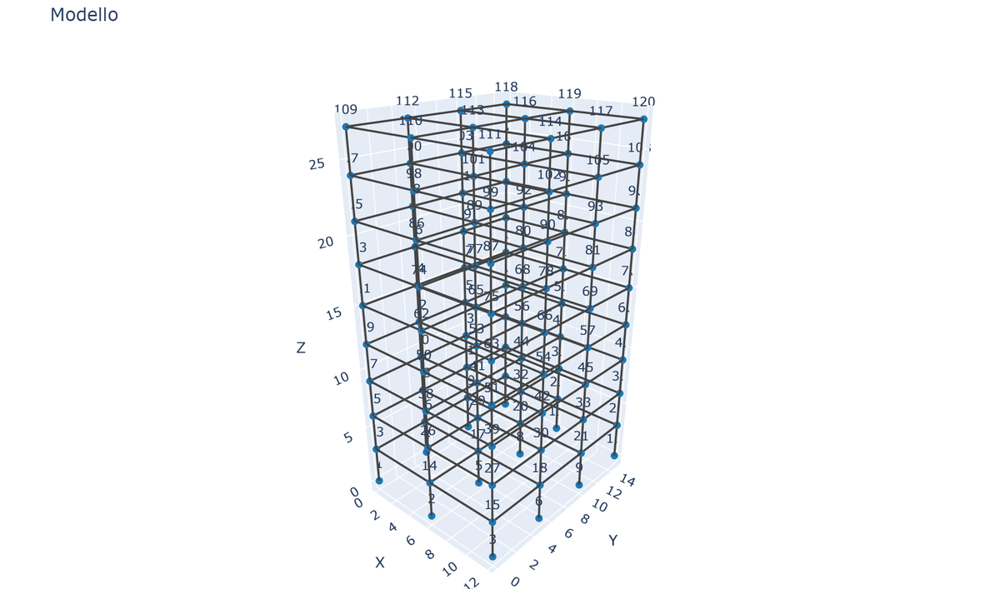 |
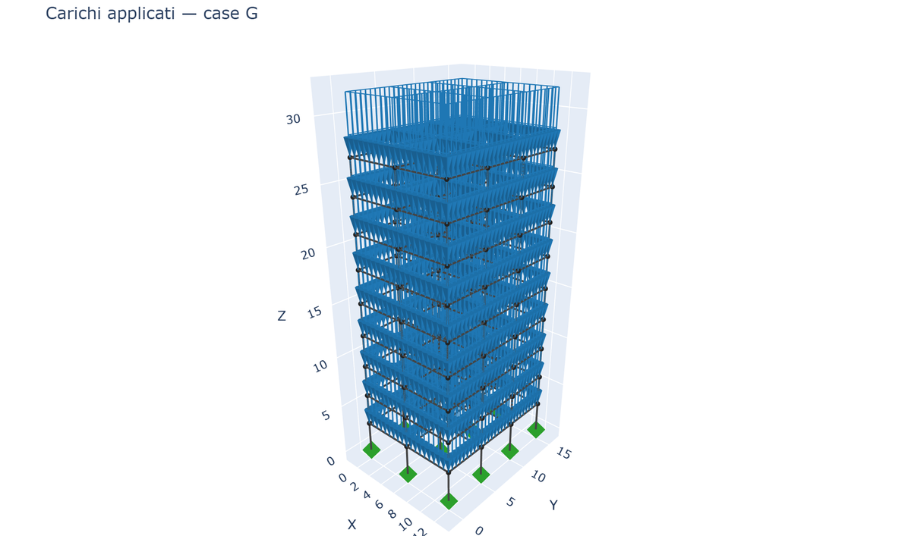 |
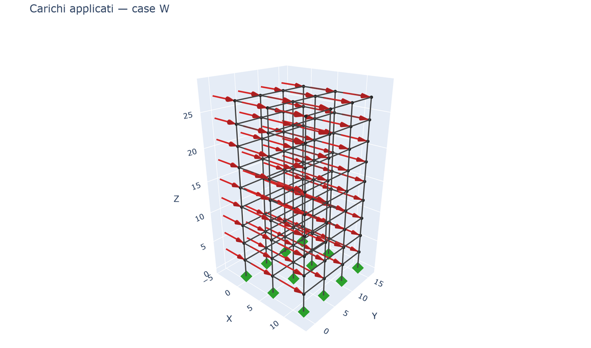 |
| Deformata | Momento Mz | Sforzo normale N |
|---|---|---|
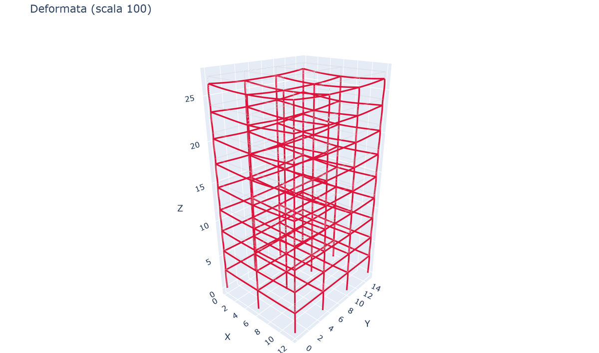 |
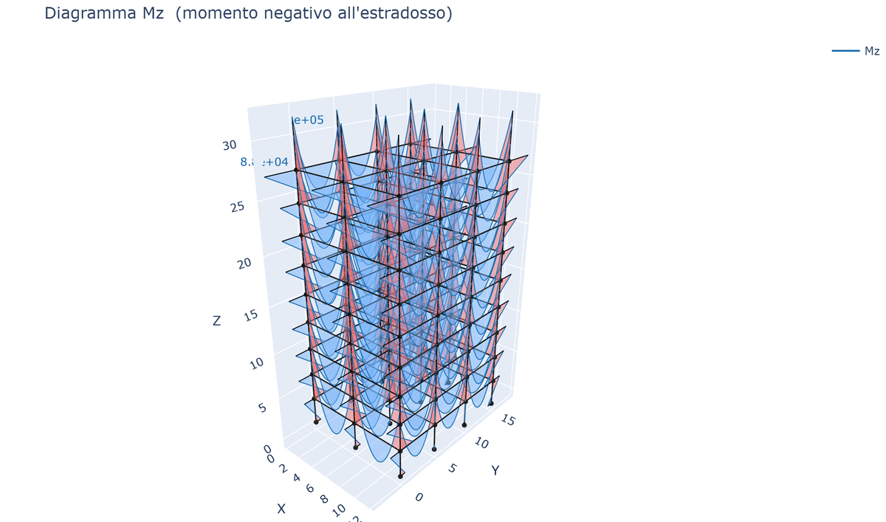 |
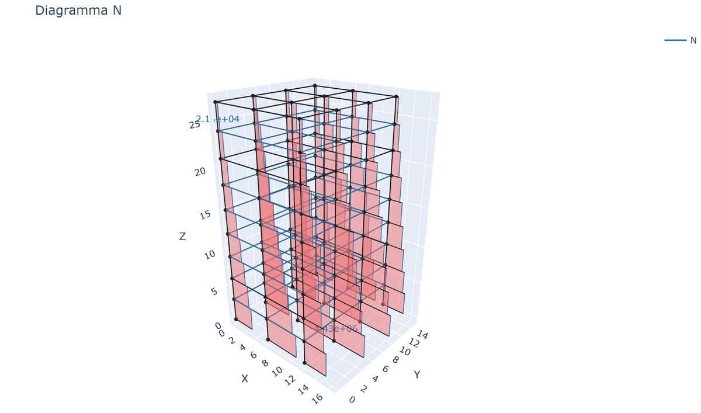 |
| Reazioni | Modo 1 (T=1.86s) | Modo 2 (T=1.70s) |
|---|---|---|
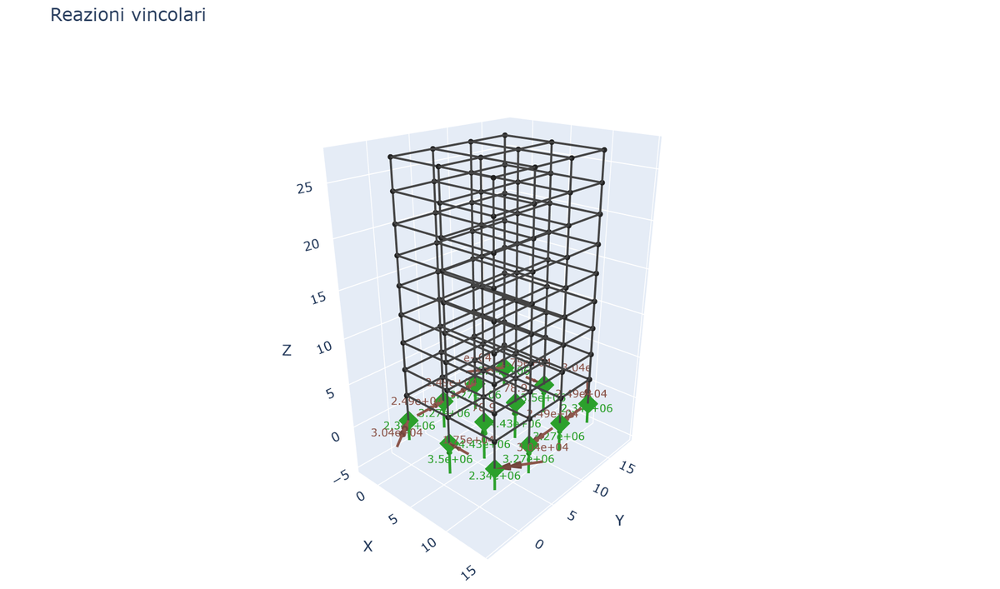 |
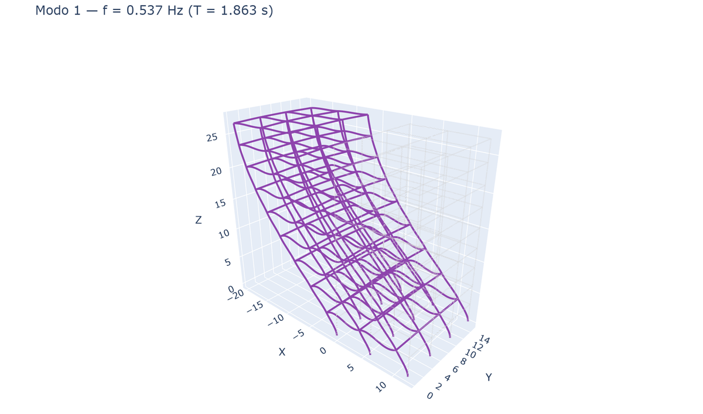 |
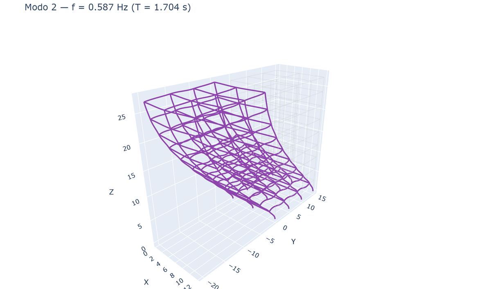 |
| Modo 3 (T=1.61s) |
|---|
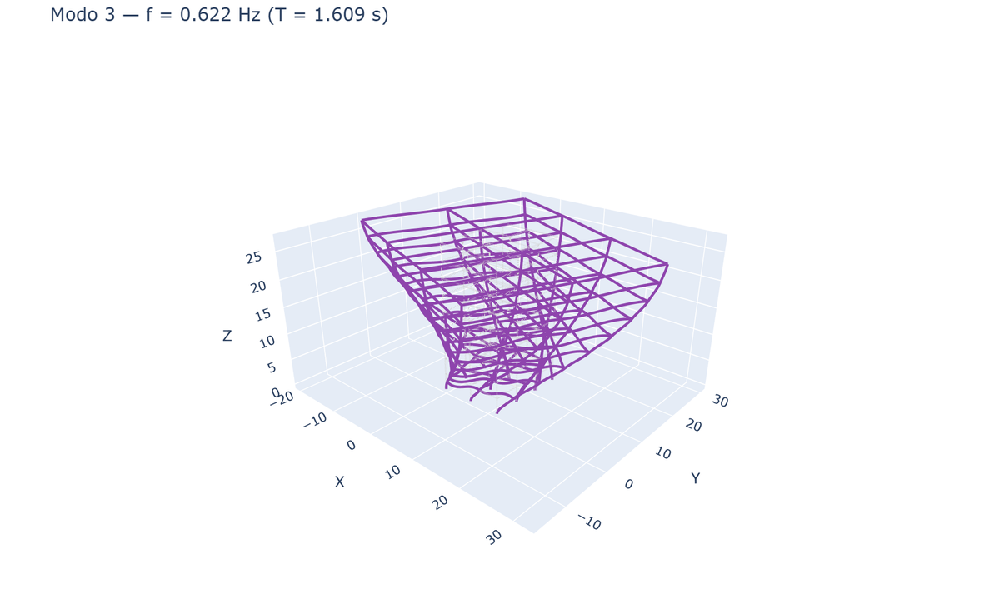 |
Report Word generato con Matplotlib
L'esempio produce anche un report Word tecnico con le figure PNG generate in
memoria da Matplotlib e inserite tramite python-docx.
Scarica il report Word della palazzina
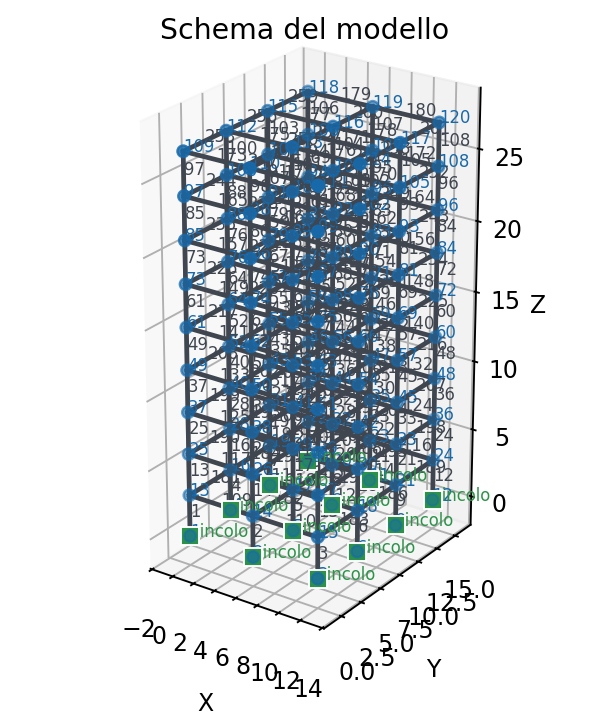
Per rigenerare il documento:
python scripts/generate_palazzina_word_report.py
Il nucleo del flusso e':
from beamfeapy.reporting import create_word_report
m = build_palazzina_model()
combinations = {
"SLU gravitazionale - 1.35G + 1.5Q": {"G": 1.35, "Q": 1.5},
"SLU vento - 1.35G + 1.5Q + 1.5W": {"G": 1.35, "Q": 1.5, "W": 1.5},
}
results = {name: m.solve(cases=cases) for name, cases in combinations.items()}
report = create_word_report(
m,
results,
options={
"title": "Palazzina residenziale 9 piani - Report FEM",
"image_width_cm": 15.8,
"load_cases": ["G", "Q", "W"],
"combinations": combinations,
"force_components": ["Mz", "Vy", "N"],
},
)
with open("docs/assets/ex26_palazzina_report.docx", "wb") as f:
f.write(report.getvalue())
Esempio 27 — Grigliato di travi 3D
Un grigliato di travi 3D con: - Griglia 4×4 di travi che si intersecano nel piano X-Y - Semplicemente appoggiato ai 4 angoli - Lunghezza di campata 5 m, dimensioni totali in pianta: 20 m × 20 m - 25 nodi, 40 elementi
Carichi
| Caso | Tipo | Descrizione |
|---|---|---|
| G | Distribuito | 12 kN/m su tutte le travi (verticale, Z globale) |
| Q | Nodale | 100 kN concentrato nel nodo centrale |
Analisi
- Statica: combinazione G + Q
- Modale: masse da
{G: 1.0, Q: 0.3} - Post-elaborazione completa: tutte e 6 le componenti di sollecitazione interna
Risultati
Static analysis (G + Q): 0.035 s
Vertical displacement at center: -6.09 mm
Total vertical reaction: 100000 N
Modal analysis: 0.158 s
Mode f [Hz] T [s] mpX mpY mpZ
1 1.987 0.503 0.762 0.000 0.000
2 2.053 0.487 0.000 0.000 0.938
3 3.305 0.303 0.000 0.000 0.000
4 3.305 0.303 0.000 0.000 0.000
5 4.421 0.226 0.000 0.695 0.000
6 4.742 0.211 0.000 0.000 0.000
Script
Mostra lo script completo
"""Example 27 - 3D beam grillage (grigliato di travi)."""
import _common # noqa: F401
import time
from beamfeapy import Material, Model, Section
from beamfeapy.plotting import (
plot_deformed, plot_diagram, plot_internal_forces, plot_loads, plot_model,
plot_mode, plot_reactions,
)
def main():
nx, ny = 4, 4
L = 5.0
mat = Material(E=210e9, nu=0.3, alpha=1.2e-5)
sec = Section(A=0.18, Iy=1.35e-3, Iz=5.4e-3, J=2.0e-3)
m = Model()
node_id = 1
node_grid = {}
for iy in range(ny + 1):
for ix in range(nx + 1):
x, y = ix * L, iy * L
m.add_node(node_id, x, y, 0.0)
node_grid[(ix, iy)] = node_id
node_id += 1
elem_id = 1
for iy in range(ny + 1):
for ix in range(nx):
ni = node_grid[(ix, iy)]
nj = node_grid[(ix + 1, iy)]
m.add_beam(elem_id, ni, nj, mat, sec, ref_vector=(0, 0, 1))
elem_id += 1
for iy in range(ny):
for ix in range(nx + 1):
ni = node_grid[(ix, iy)]
nj = node_grid[(ix, iy + 1)]
m.add_beam(elem_id, ni, nj, mat, sec, ref_vector=(0, 0, 1))
elem_id += 1
m.support(node_grid[(0, 0)], ux=True, uy=True, uz=True)
m.support(node_grid[(nx, 0)], uy=True, uz=True)
m.support(node_grid[(0, ny)], uz=True)
m.support(node_grid[(nx, ny)], uz=True)
for e in m.elements.values():
m.add_distributed_load(e.id, "fz", -12e3, case="G")
center_ix, center_iy = nx // 2, ny // 2
center_node = node_grid[(center_ix, center_iy)]
m.add_nodal_load(center_node, Fz=-100e3, case="Q")
res = m.solve(cases=["G", "Q"])
mr = m.modal(n_modes=10, mass_source={"G": 1.0, "Q": 0.3}, g=9.81)
_common.save(plot_model(m), "ex27_grigliato_model.html")
_common.save(plot_loads(m, case="G"), "ex27_grigliato_loads_G.html")
_common.save(plot_deformed(res, scale=50), "ex27_grigliato_deformed.html")
_common.save(plot_diagram(res, "Mz"), "ex27_grigliato_Mz.html")
_common.save(plot_diagram(res, "My"), "ex27_grigliato_My.html")
_common.save(plot_diagram(res, "Vz"), "ex27_grigliato_Vz.html")
_common.save(plot_diagram(res, "T"), "ex27_grigliato_T.html")
_common.save(plot_reactions(res), "ex27_grigliato_reactions.html")
for e in m.elements.values():
if e.node_i.id == node_grid[(center_ix-1, center_iy)] and \
e.node_j.id == node_grid[(center_ix, center_iy)]:
_common.save(plot_internal_forces(res, e.id),
"ex27_grigliato_internal_forces.html")
break
for i in range(4):
_common.save(plot_mode(mr, i, scale=3.0), f"ex27_grigliato_mode{i+1}.html")
Galleria
| Modello | Carichi G | Carichi Q |
|---|---|---|
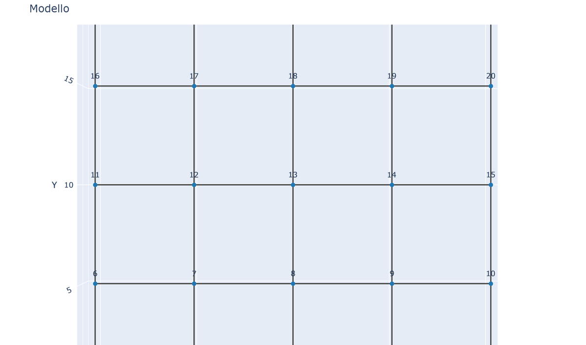 |
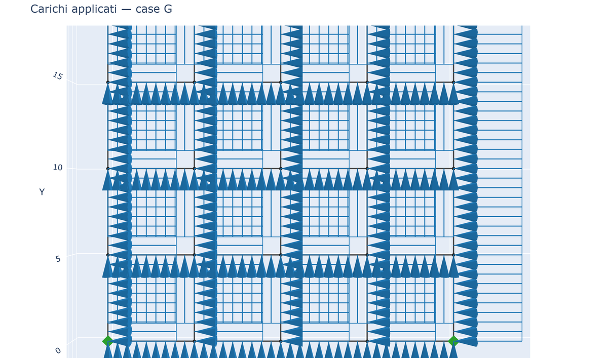 |
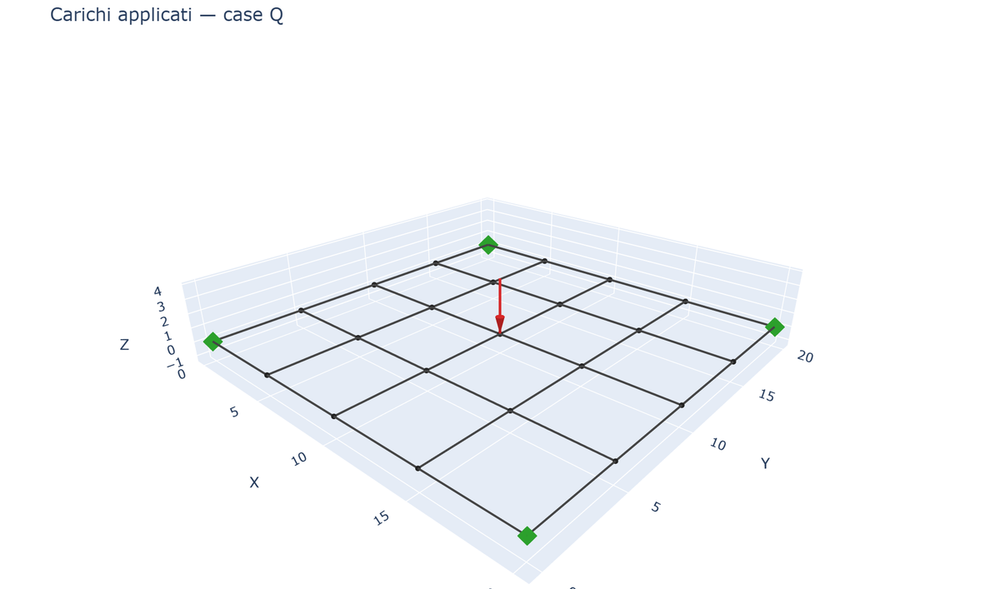 |
| Deformata | Momento Mz | Momento My |
|---|---|---|
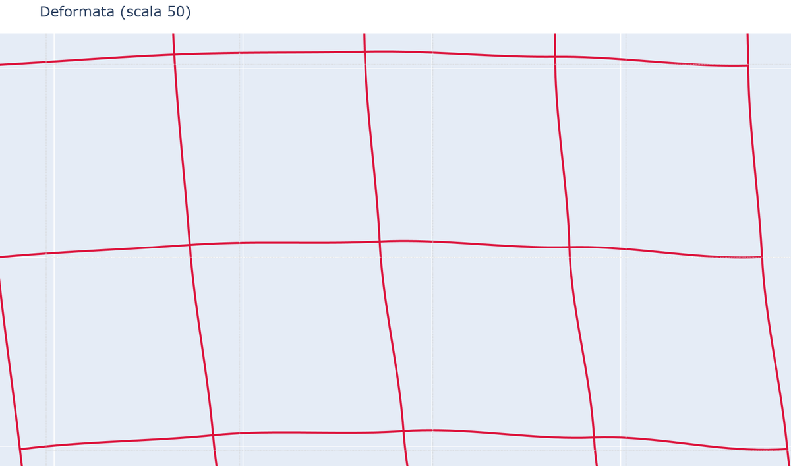 |
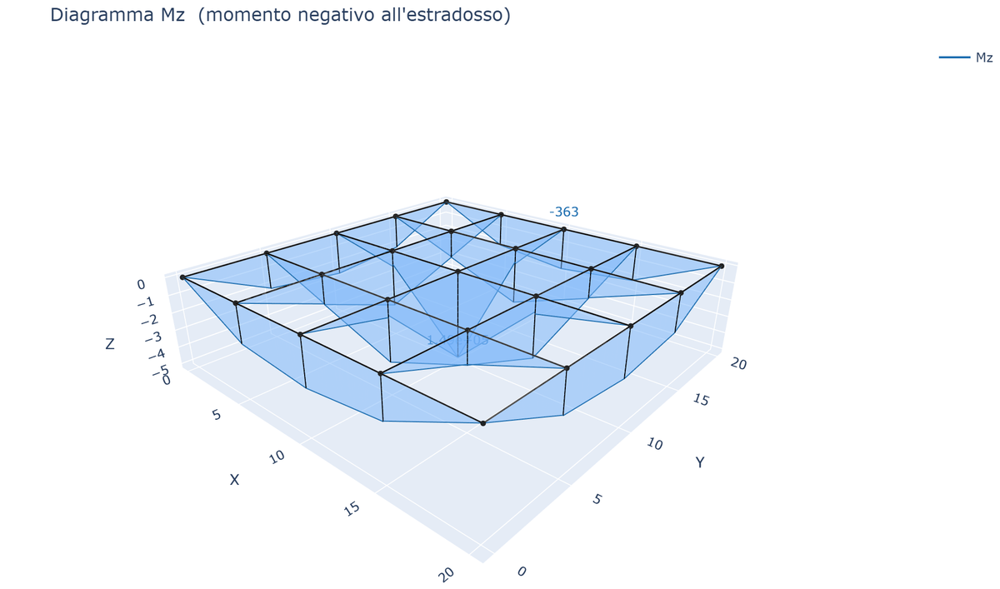 |
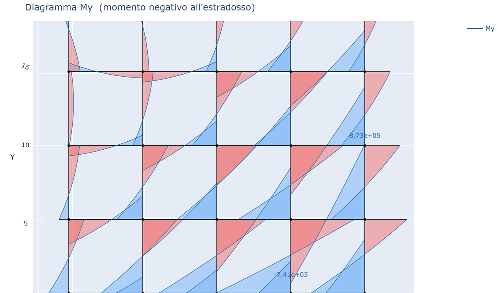 |
| Taglio Vy | Taglio Vz | Torsione T | Sforzo normale N |
|---|---|---|---|
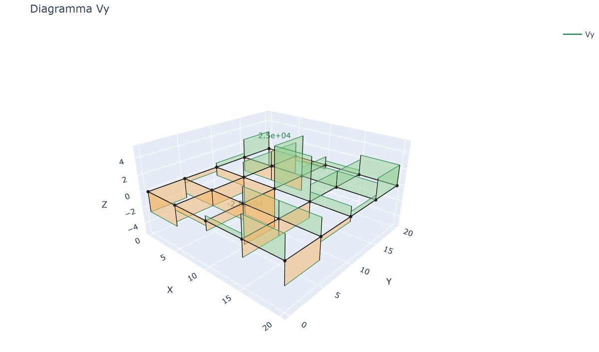 |
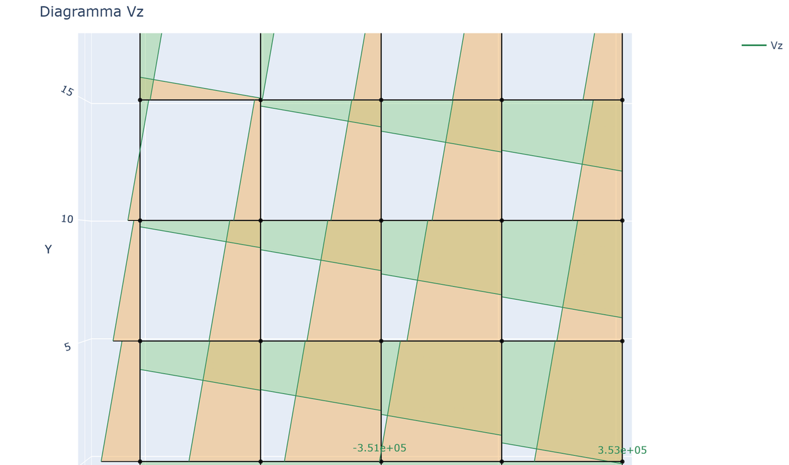 |
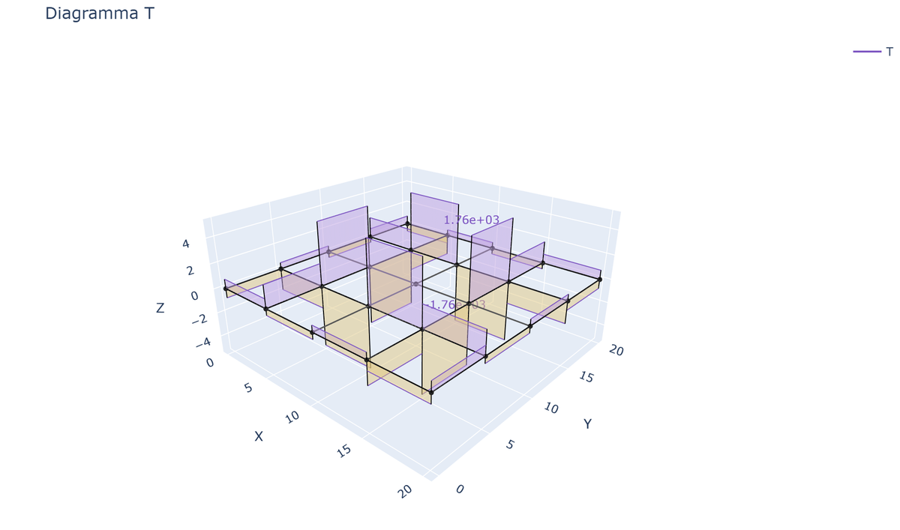 |
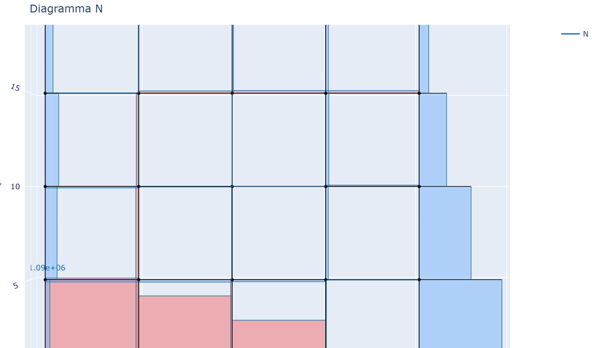 |
| Reazioni | Sollecitazioni interne (trave centrale) |
|---|---|
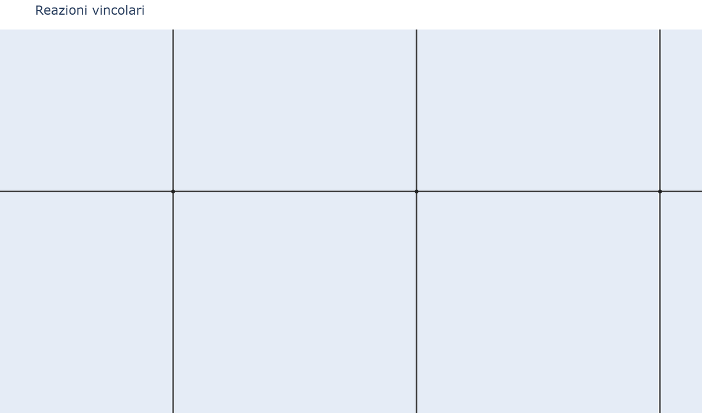 |
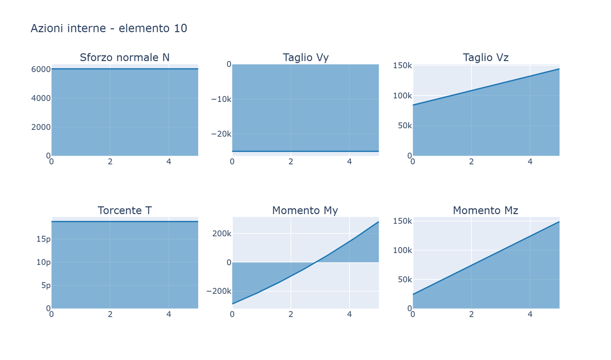 |
| Modo 1 (T=0.50s) | Modo 2 (T=0.49s) | Modo 3 (T=0.30s) | Modo 4 (T=0.30s) |
|---|---|---|---|
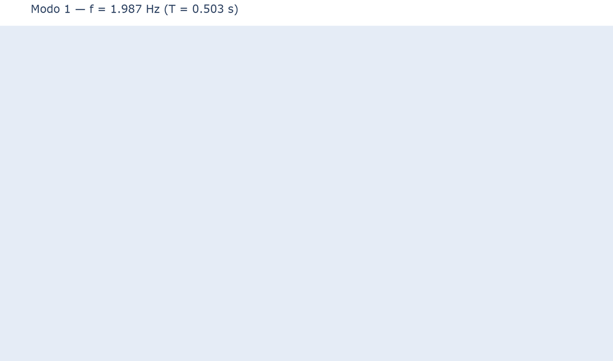 |
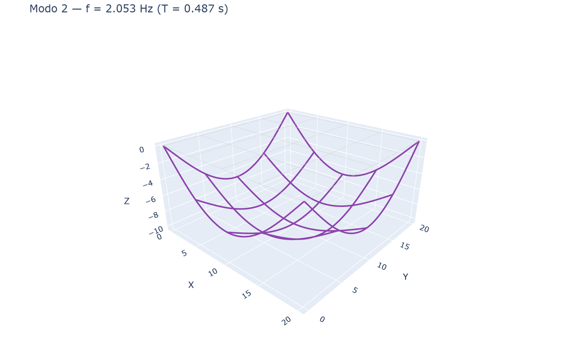 |
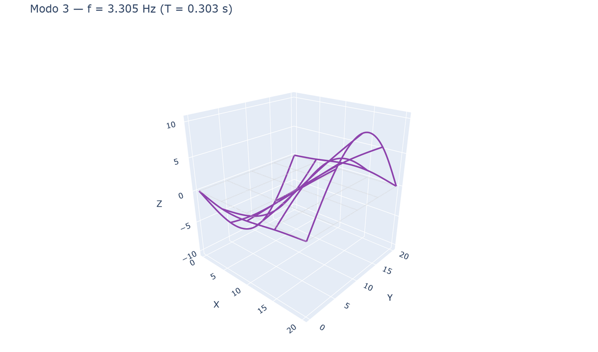 |
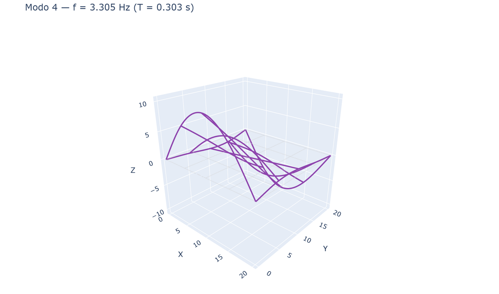 |
Esempio 28 — Grattacielo (50 piani) con benchmark prestazionale
Un grattacielo di 50 piani con: - 3×3 campate (4×4 pilastri per piano) - Lunghezza di campata 4,0 m, altezza di interpiano 3,5 m - Altezza totale: 175 m - Pilastri rastremati: 0,8×0,8 m alla base → 0,4×0,4 m in sommità - 816 nodi, 2000 elementi
Carichi
| Caso | Tipo | Descrizione |
|---|---|---|
| G | Distribuito | 30 kN/m su tutte le travi (permanente) |
| Q | Distribuito | 10 kN/m su tutte le travi (carico variabile) |
| W | Nodale | 50 kN orizzontale a ogni piano (vento, direzione X) |
Analisi
- Statica SLU: combinazione
{G: 1.35, Q: 1.5, W: 1.5} - Modale: masse da
{G: 1.0, Q: 0.3} - Benchmark prestazionale: solutore denso vs sparso
Benchmark prestazionale
Dense solver: 3.427 s
Sparse solver: 2.934 s
Speedup: 1.17x
Max difference (dense vs sparse): 3.32e-12
Risultati
Max horizontal displacement at top: 668.96 mm
Drift ratio: 0.382%
Modal analysis: 3.567 s
Mode f [Hz] T [s] mpX mpY
1 0.114 8.801 0.470 0.181
2 0.114 8.801 0.181 0.470
3 0.204 4.894 0.000 0.000
4 0.373 2.683 0.000 0.194
5 0.373 2.683 0.194 0.000
6 0.518 1.929 0.000 0.000
7 0.725 1.379 0.000 0.059
8 0.725 1.379 0.059 0.000
Script
Mostra lo script completo
"""Example 28 - Skyscraper (grattacielo) with performance benchmark."""
import _common # noqa: F401
import time
import numpy as np
from beamfeapy import Material, Model, Section
from beamfeapy.plotting import (
plot_deformed, plot_diagram, plot_loads, plot_model, plot_mode, plot_reactions,
)
def main():
n_storeys = 50
bays_x, bays_y = 3, 3
Lx, Ly = 4.0, 4.0
H = 3.5
mat = Material(E=35e9, nu=0.2, alpha=1.0e-5)
col_sec_base = Section(A=0.64, Iy=3.41e-2, Iz=3.41e-2, J=5.8e-2)
col_sec_mid = Section(A=0.36, Iy=1.08e-2, Iz=1.08e-2, J=1.8e-2)
col_sec_top = Section(A=0.16, Iy=2.13e-3, Iz=2.13e-3, J=3.6e-3)
bm_sec = Section(A=0.18, Iy=1.35e-3, Iz=5.4e-3, J=2.0e-3)
m = Model()
node_id = 1
node_grid = {}
for iz in range(n_storeys + 1):
for iy in range(bays_y + 1):
for ix in range(bays_x + 1):
x, y, z = ix * Lx, iy * Ly, iz * H
m.add_node(node_id, x, y, z)
node_grid[(ix, iy, iz)] = node_id
node_id += 1
elem_id = 1
for iz in range(n_storeys):
if iz < n_storeys // 3:
col_sec = col_sec_base
elif iz < 2 * n_storeys // 3:
col_sec = col_sec_mid
else:
col_sec = col_sec_top
for iy in range(bays_y + 1):
for ix in range(bays_x + 1):
ni = node_grid[(ix, iy, iz)]
nj = node_grid[(ix, iy, iz + 1)]
m.add_beam(elem_id, ni, nj, mat, col_sec)
elem_id += 1
for iz in range(1, n_storeys + 1):
for iy in range(bays_y + 1):
for ix in range(bays_x):
ni = node_grid[(ix, iy, iz)]
nj = node_grid[(ix + 1, iy, iz)]
m.add_beam(elem_id, ni, nj, mat, bm_sec, ref_vector=(0, 0, 1))
elem_id += 1
for iy in range(bays_y):
for ix in range(bays_x + 1):
ni = node_grid[(ix, iy, iz)]
nj = node_grid[(ix, iy + 1, iz)]
m.add_beam(elem_id, ni, nj, mat, bm_sec, ref_vector=(0, 0, 1))
elem_id += 1
for iy in range(bays_y + 1):
for ix in range(bays_x + 1):
m.fix(node_grid[(ix, iy, 0)])
beam_elem_ids = []
for e in m.elements.values():
ni, nj = e.node_i.id, e.node_j.id
zi = m.nodes[ni].z
zj = m.nodes[nj].z
if abs(zi - zj) < 0.01:
beam_elem_ids.append(e.id)
for e_id in beam_elem_ids:
m.add_distributed_load(e_id, "fy", -30e3, case="G")
m.add_distributed_load(e_id, "fy", -10e3, case="Q")
for iz in range(1, n_storeys + 1):
for iy in range(bays_y + 1):
for ix in range(bays_x + 1):
m.add_nodal_load(node_grid[(ix, iy, iz)],
Fx=50e3 / ((bays_x + 1) * (bays_y + 1)), case="W")
# Benchmark
t0 = time.time()
res_dense = m.solve(cases={"G": 1.35, "Q": 1.5, "W": 1.5})
t_dense = time.time() - t0
t0 = time.time()
res_sparse = m.solve(sparse=True, cases={"G": 1.35, "Q": 1.5, "W": 1.5})
t_sparse = time.time() - t0
mr = m.modal(n_modes=15, mass_source={"G": 1.0, "Q": 0.3}, g=9.81)
res = res_sparse
_common.save(plot_model(m), "ex28_grattacielo_model.html")
_common.save(plot_loads(m, case="G"), "ex28_grattacielo_loads_G.html")
_common.save(plot_loads(m, case="W"), "ex28_grattacielo_loads_W.html")
_common.save(plot_deformed(res, scale=50), "ex28_grattacielo_deformed.html")
_common.save(plot_diagram(res, "Mz"), "ex28_grattacielo_Mz.html")
_common.save(plot_diagram(res, "N"), "ex28_grattacielo_N.html")
_common.save(plot_reactions(res), "ex28_grattacielo_reactions.html")
for i in range(4):
_common.save(plot_mode(mr, i, scale=3.0), f"ex28_grattacielo_mode{i+1}.html")
Galleria
| Modello | Carichi G | Carichi W |
|---|---|---|
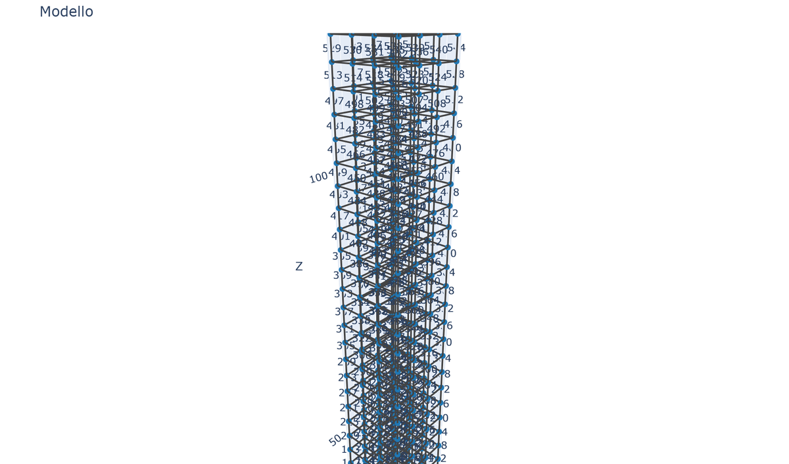 |
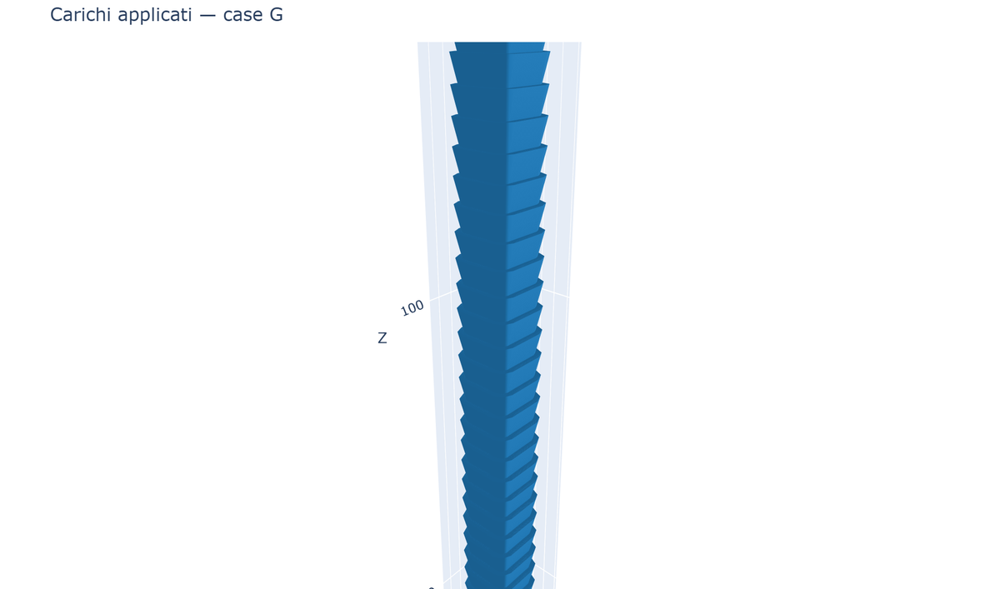 |
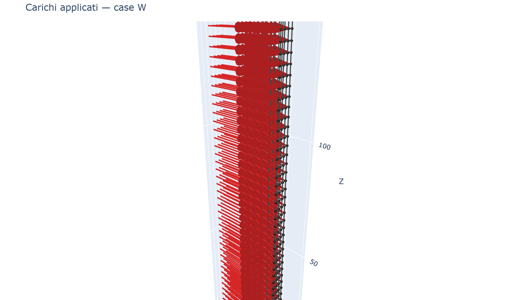 |
| Deformata | Momento Mz | Sforzo normale N |
|---|---|---|
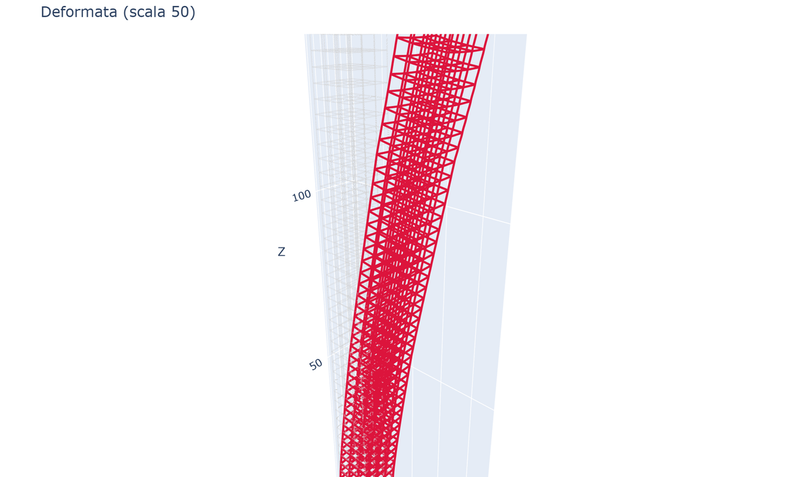 |
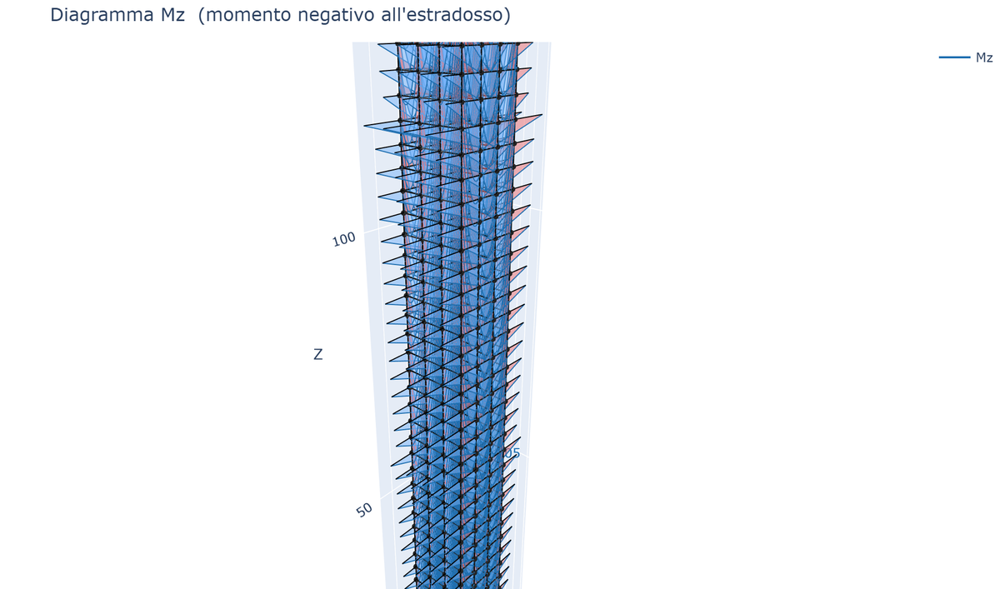 |
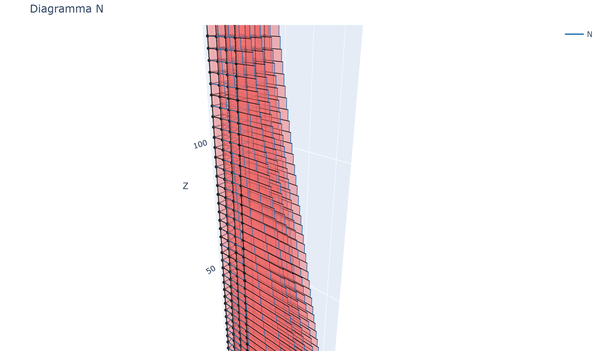 |
| Reazioni | Modo 1 (T=8.80s) | Modo 2 (T=8.80s) |
|---|---|---|
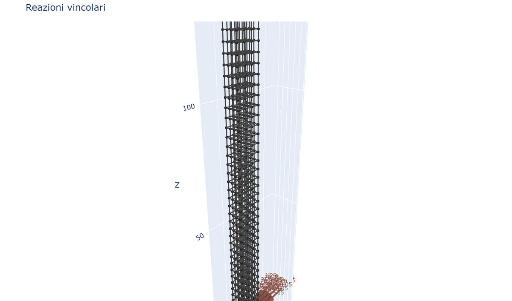 |
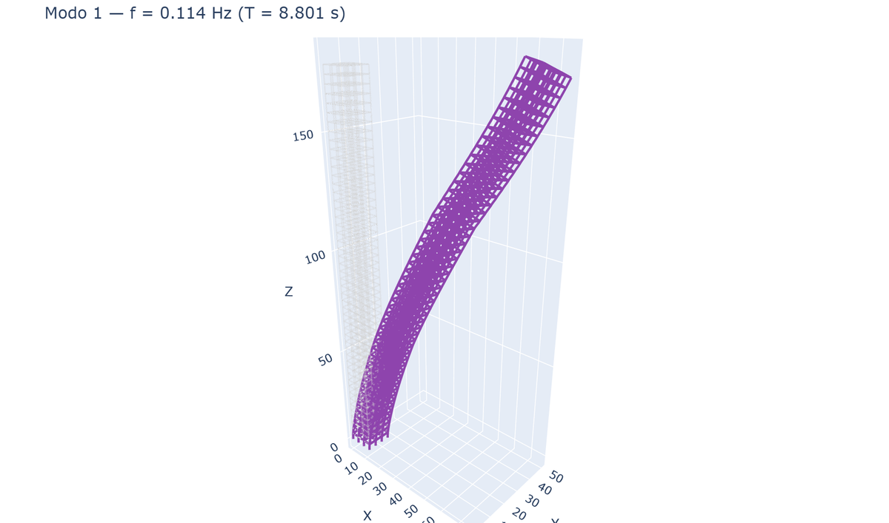 |
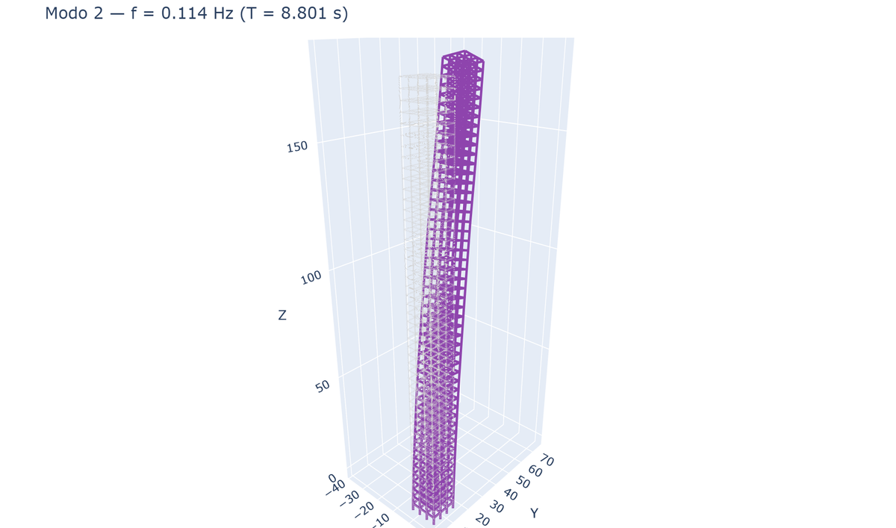 |
| Modo 3 (T=4.89s) | Modo 4 (T=2.68s) |
|---|---|
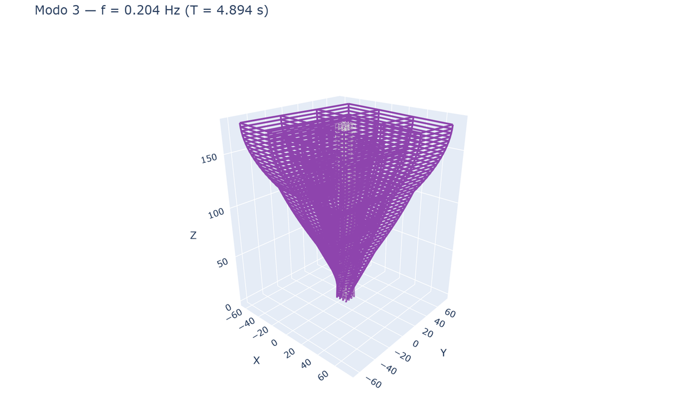 |
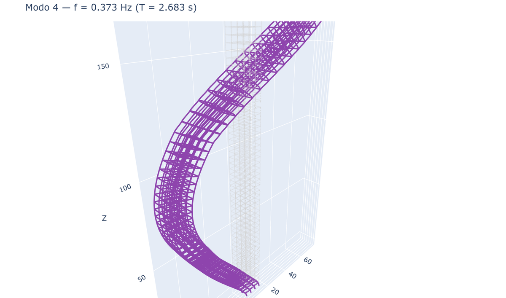 |